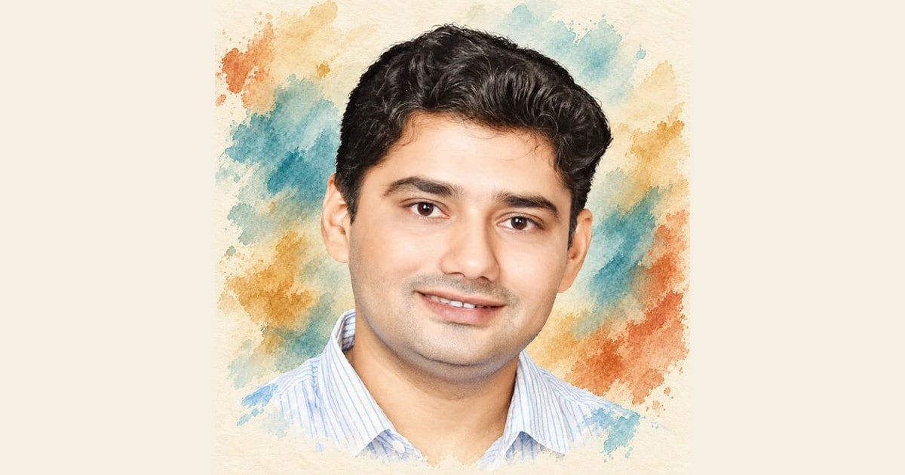
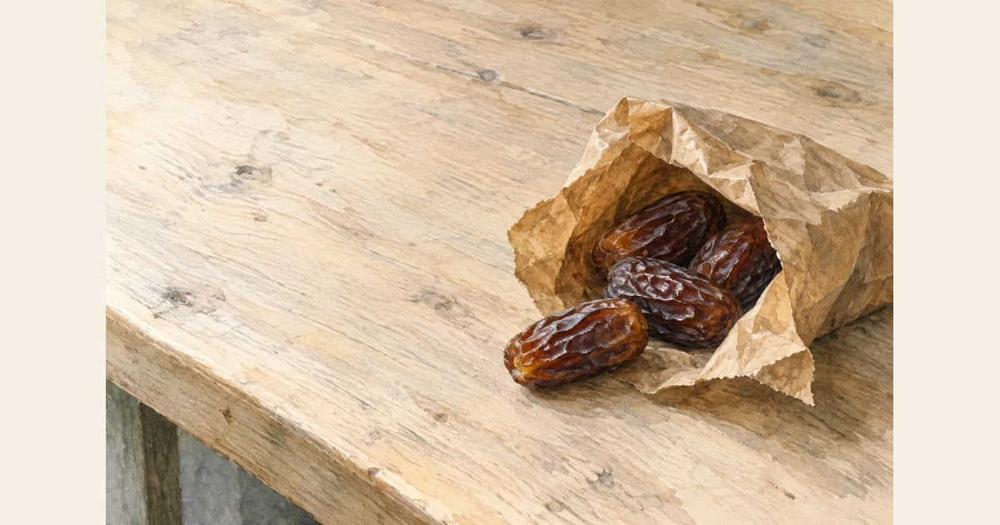
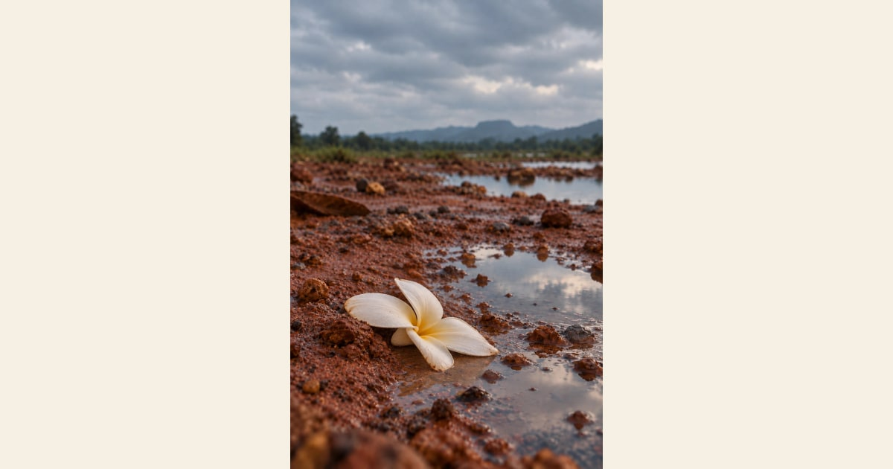
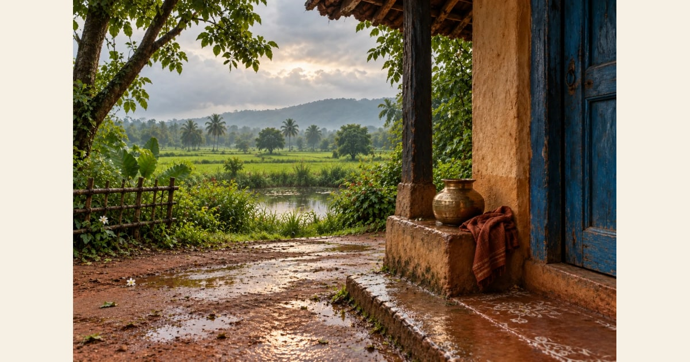
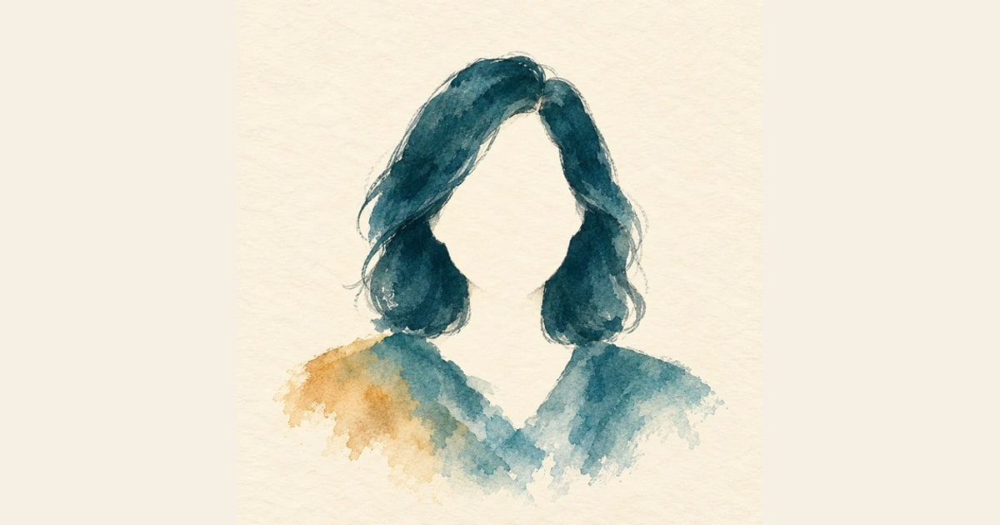

KABITA LIVE
Sujit Kumar Satapathy/ସୁଜିତ କୁମାର ଶତପଥି · Kabita Live
Poetry, biography and contributions by Sujit Kumar Satapathy/ସୁଜିତ କୁମାର ଶତପଥି on Kabita Live.
poet portrait · poet-49.html
Illustrative sharing cards from the actual generated metadata. Each app controls its final layout.

Poetry, biography and contributions by Sujit Kumar Satapathy/ସୁଜିତ କୁମାର ଶତପଥି on Kabita Live.
poet portrait · poet-49.html

AFRUZA SENT ME SOME DATES — By Nilim Kumar. Read the poem on Kabita Live.
poem illustration · poem-724.html
RECLUSION — By Dilip Mohapatra. Read the poem on Kabita Live.
text poem edition cover · poem-10.html

Read Issue 47 · September 2026: poetry in Odia, Hindi and English.
edition cover · issue-47.html

Home — Kabita Live, a journal of poetry in Odia, Hindi and English.
stable homepage · index.html

Poetry, biography and contributions by Manju Chouhan on Kabita Live.
poet portrait · poet-233.html